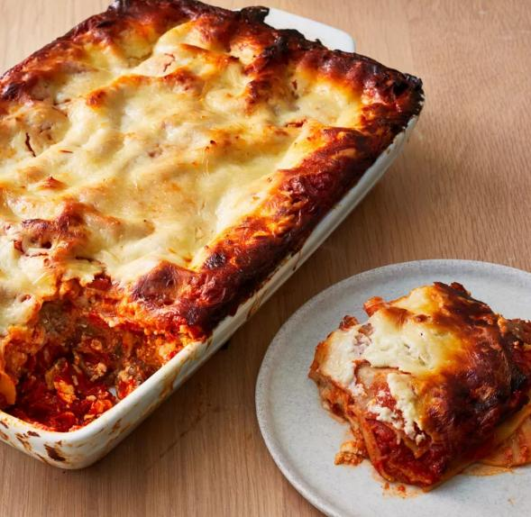

Description
Making Lasagna can take times and complex base on your taste.
Let's go over to basic ingredients.
Ingredients
Meat
Onion and garlic
Tomato products
Sugar
Spices and seasonings
Lasagna noodles
Cheeses
Egg
Steps
- Make the meat sauce.
- Cook the noodles.
- Make the ricotta mixture.
- Layer the lasagna according to the recipe instructions.
- Cover with foil and bake.
- Let the lasagna rest before serving.